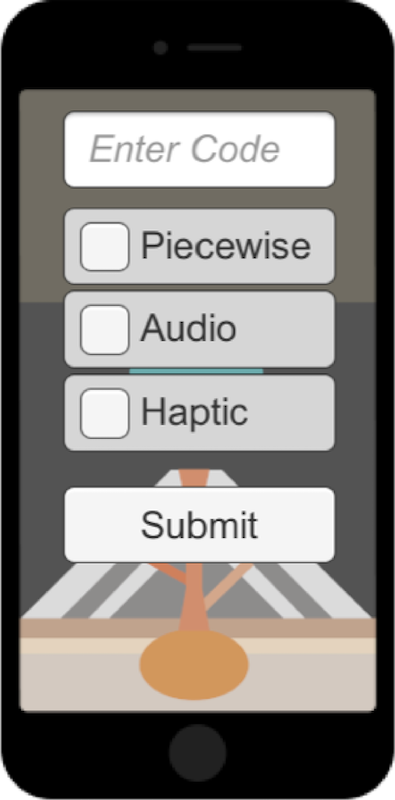
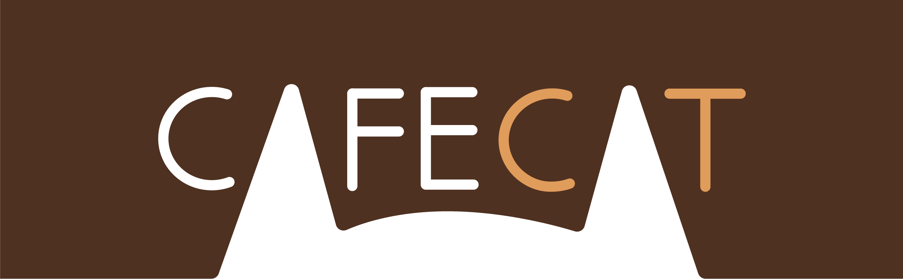

<!DOCTYPE html>
<html lang="en">
<head>
</head>
<body></body>
</html>
<title></title>
<meta content="text/html; charset=utf-8"http-equiv=Content-Type><meta content="width=device-width,initial-scale=1"name=viewport>
<title>VR Works</title>
<link href="https://fonts.googleapis.com/css?family=Dosis" />
<link href=css/styles.css rel=stylesheet>
<nav id="nav" role="navigation"><a href="#nav" title="Show navigation">☰Menu</a><a href="#" title="Hide navigation">☰ Hide Menu</a>
<ul>
	<li><a href="index.html">Home</a></li>
	<li><a aria-haspopup="true" href="https://www.linkedin.com/in/toni-kaplan-796768129/">LinkedIn</a></li>
	<li><a aria-haspopup="true" class="active" href="works.html">Works</a></li>
	<li><a aria-haspopup="true" href="tkaplan_cv.pdf">CV PDF</a></li>
	<li><a aria-haspopup="true" class="download" href="tkaplan_resume.pdf">Resume PDF</a></li>
</ul>
</nav>

<header id="about"><meta http-equiv="Content-Type" content="text/html; charset=utf-8">
<div class="content-wrap">
<div class="col-wide table-cell">
<div class="content-wrap">
<h1>Toni Kaplan</h1>
<span class="email">tonarie.k@gmail.com<br>
	<a href="https://github.com/kaplantm">GitHub</a></span>
<!-- <span class="title">Front End Development &amp; UX Design</span></div> -->
</div>
</div>
</header>

<main>
<section class="projects" id="projects">
<div class="content-wrap">
<h2>Selected Works</h2>

<div class="col-full project-description">
<h3>Interface For Accessible Diagrams (Created in Unity)</h3>

<p>Capstone Project, University of Maine</p>

<p>The objective of this research project was to develop a haptic-audio interface compatible with a commercially available device that could be used to present educational diagrams to visually impaired students. This project involved the development of a mobile application, the &quot;Multimodal Diagram System&quot;(MDS), to provide accessible diagrams for persons with visual impairments.</p>

<p>I created an iPhone compatible application that uses audio and haptic feedback to non-visually convey diagram content. I also created a <a href="http://tonarie.com/diagramUpload.html" target="_blank">web interface</a> that can be used by educators to convert visual graphics into multimodal diagrams for use with the application.</p>

<p>I created tutorials and <a href="http://tonarie.com/videoTutorials.html" target="_blank">videos</a> demonstrating how to use the system, and conducted a research study to determine the efficacy of this system among visually impaired users.</p>
</div>

<div class="col-full project-description">
<h3>ClimaCast Visualizer Project Lead</h3>

<p>UMaine New Media</p>

<p>I led a 10-person project team and served as one of two main programmers in the development of a live weather visualizer prototype.</p>

<p>Project involved protoype development, branding, website design and promotional videos. Personal responsibilities included team management, physical prototyping, python programming, and web/graphic design troubleshooting. A core component of my role in this project was coordinating the prototyping, web and graphic personnel to assure a unified concept and brand. For more information, see the <a href="http://nmdportfolios.org/clima/the-product/" target="_blank">ClimaCast website.</a></p>
</div>

<div class="col-full project-description">

<h3>Alone in the Dark VR Experience (Created in Unity)</h3>
<div style="float:right; padding:1em;">
<iframe width="400" height="250" src="https://www.youtube.com/embed/7Kpvqok06dU?rel=0" frameborder="0" allow="autoplay; encrypted-media" allowfullscreen></iframe>
</div>
<p>VEMI Lab Virtual Reality Demo, University of Maine</p>

<p>Alone in the Dark was created as a virtural reality experience that focuses on multimodal interaction with our environments. At certain times during the experience participants visuion is limited and they must advance through the narrative by navigating based only on spatial audio cues. Participants were often surprise by how effectively they were able to navigate and learn the space without vision.
</p>
</div>

<div class="col-full project-description">

<h3>Apondcalypse VR Experience (Created in Unity)</h3>
<div style="float:right; padding:1em;">
<iframe width="400" height="250" src="https://www.youtube.com/embed/_Mt1oNCGQrM" frameborder="0" allow="autoplay; encrypted-media" allowfullscreen></iframe></div>
<p>VEMI Lab Virtual Reality Demo, University of Maine</p>

<p>Apondcalypse was designed to make use of a limit VR interaction space by immersive the user in a short narrative without confined bounds, in this case the participant is trapped in a bunker as the virtual world changes around them.
</p>
</div>

<div class="col-full project-description">
<h3>Bad Elf Game (Created in Unity)</h3>
<div style="float:right; padding:1em;">
<iframe width="400" height="250" src="https://www.youtube.com/embed/Zzm-ZFT7oZo" frameborder="0" allow="autoplay; encrypted-media" allowfullscreen></iframe></div>
<p>School of Computer Science, University of Maine</p>

<p>This multilevel game was created by myself and Scott Richards for a class final project. We custom made all the 3D assets included in the game.
</p>
</div>


<div class="col-full project-description">
<h3>Graphic Design</h3>

<p>Various Projects</p>

<p>Here I showcase graphics design from projects and personal endeavours. While much of my recent work has involved in designing for blind and visually impaired users, I am also proficient in visual graphic design.</p>

<div class="graphic-design">
<figure></figure>

<figure></figure>

<figure></figure>

<figure></figure>

<figure></figure>

<figure></figure>

<figure></figure>

<figure></figure>

<figure class="small-img" style="background-color:#fff"></figure>

<figure class="wide-img" style="background-color:#fff"></figure>
<a id="updateworks"></a>

<figure><a href="resources/rec_camp_2018_poster.pdf" target="_blank"></a>

<figcaption>Large outdoor poster advertising South Berwick Recreation Summer Day Camp 2018 field trips.</figcaption>
</figure>

<figure><a href="resources/TechNight.pdf" target="_blank"></a>

<figcaption>5x8 inch print design promoting Maine Discovery Museum&#39;s Tech Night Arduino Workshop.</figcaption>
</figure>

<figure><a href="resources/nmd.pdf"></a>

<figcaption>Informational handout for UMaine New Media academic curriculum.</figcaption>
</figure>

<figure><a href="images/sizefu_diagram.jpg" target="_blank"></a>

<figcaption>Interaction diagram showing various pages of an mobile application that finds the users ideal clothing size in multiple brands. Used in digital presentation.</figcaption>
</figure>
</div>
</div>

<h3>For additional works, see my <a href="http://nmdportfolios.org/tkaplan/" target="_blank">Undergraduate Portfolio</a></h3>
</div>
</section>
</main>

<footer id="contact">
<div class="content-wrap"><i>Last Updated Summer 2018</i></div>
</footer>
